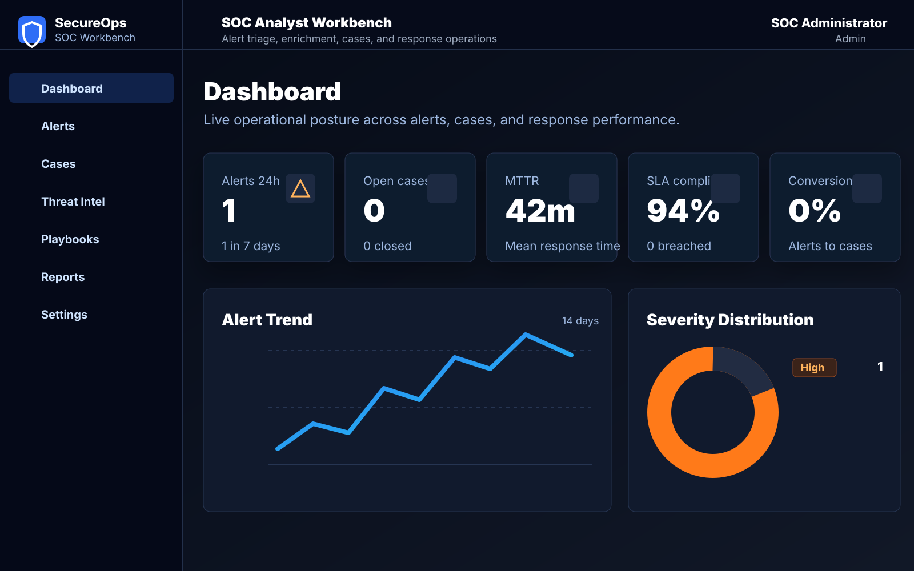
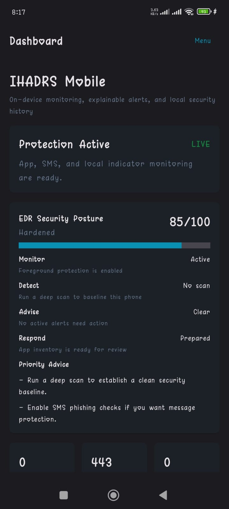
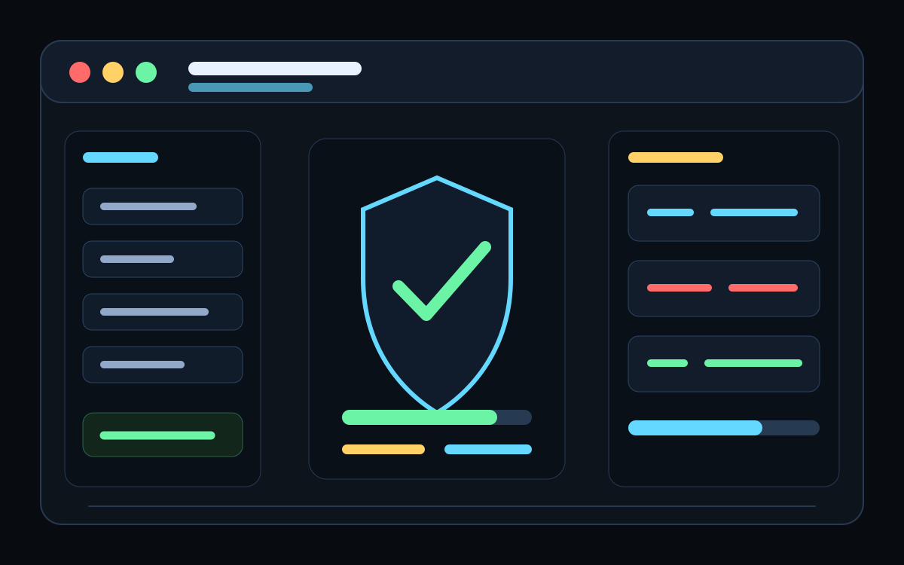
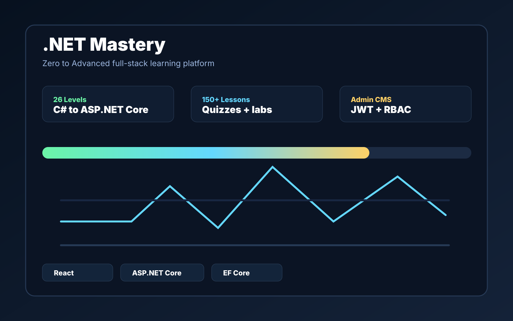
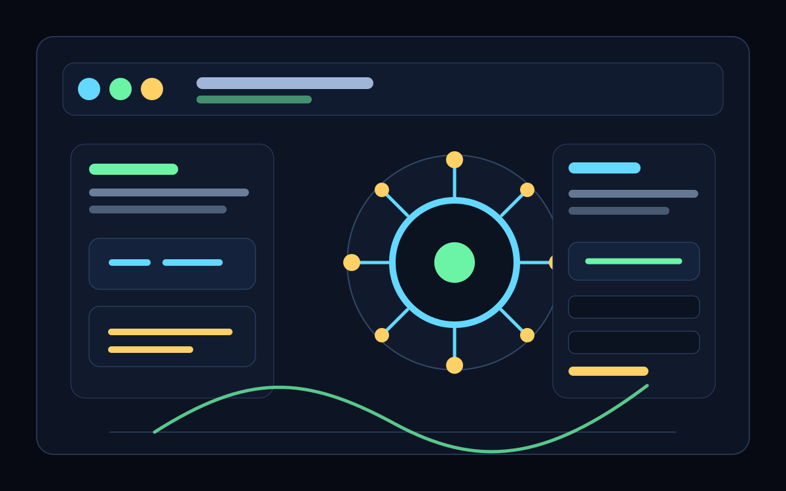
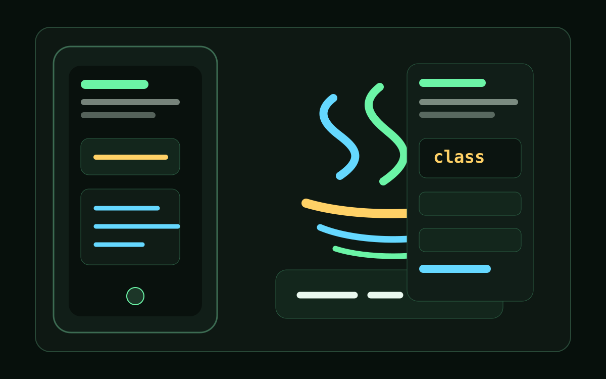

SOC Analyst Intern - Blue Team, Cyberster
Deployed a Wazuh 4.14 SIEM lab, wrote MITRE-mapped detection rules, integrated FortiGate logging, simulated insider-threat activity, and produced a NIST SP 800-61 incident report.
Download CVCybersecurity Analyst Portfolio
SOC analyst intern
I build practical security work: Wazuh and Sentinel detections, FortiGate log pipelines, phishing analysis, malware research, forensics, and automation workflows that turn alerts into analyst-ready context.

Profile
I am a software engineering student and aspiring cybersecurity professional with hands-on SOC, blue-team, threat research, and digital forensics experience. My strongest work combines investigation, documentation, automation, and clear reporting so technical findings become useful decisions.
I have worked with Wazuh, FortiGate, Microsoft Sentinel, Sumo Logic, Elastic SIEM, Suricata, Nessus, Nmap, Autopsy, FTK Imager, Volatility 3, Tines, and n8n across internships, labs, and portfolio projects.
Experience
Internship experience belongs here because it proves you have worked with real SOC workflows, detection rules, incident reports, threat research, and security tooling beyond coursework.
Deployed a Wazuh 4.14 SIEM lab, wrote MITRE-mapped detection rules, integrated FortiGate logging, simulated insider-threat activity, and produced a NIST SP 800-61 incident report.
Download CVResearched major incidents including FBR Tax Fraud, TPS ransomware, and MOVEit CVE-2023-34362, mapping TTPs to MITRE ATT&CK and writing defense-focused recommendations.
View resume detailsDesigned an enterprise SOC virtual lab with VMware, FortiGate, Active Directory, and Wazuh, then configured dashboards and rules for reconnaissance and brute-force detection.
See related workInvestigated alerts in Sentinel and Sumo Logic labs, built Elastic/Tines automation, deployed Suricata IDS and honeypots, and created an n8n threat intelligence pipeline.
Evidence portfolioCompleted a 14-course cybersecurity track covering networking, operating systems, incident response, threat hunting, compliance, forensics, and case studies.
View certificateSkill Stack
Wazuh, Microsoft Sentinel, Sumo Logic, Elastic SIEM, Suricata, alert triage, log review.
Nmap, Nessus, Nikto, Shodan, SpiderFoot, OSINT methodology, CVE validation.
Tines, n8n, Python scripting, workflow design, analyst notifications, enrichment logic.
FortiGate, Active Directory labs, HTML, CSS, JavaScript, Node.js, REST APIs, Git.
What I Do
Phishing review, indicators, attack flow summaries, and analyst-ready case notes.
Scan setup, finding validation, risk explanation, and remediation guidance.
Triage workflows, enrichment steps, email notifications, and repeatable SOC playbooks.
Selected Work

Automated threat intelligence collection and enrichment with n8n, structured alerts, and analyst-facing output.

Parsed email artifacts, enriched indicators, and routed analyst-ready phishing notifications.

Configured scans, reviewed risk, and documented remediation priorities from vulnerability findings.

Performed host discovery, port scanning, service detection, OS fingerprinting, and NSE checks.

Configured IDS monitoring, generated alerts, and reviewed eve.json and fast.log evidence.

Analyzed headers, payloads, sender patterns, and social-engineering signals from phishing samples.

Combined SpiderFoot, Shodan, Nmap, Nikto, DNS review, and recon methodology into a structured report.

Documented web enumeration, exposed services, response analysis, and CVE mapping practice.

Full-stack SOC workbench for alert triage, threat-intel enrichment, cases, playbooks, report exports, live WebSockets, and idempotent EDR ingestion.

Offline-first Android Mobile Threat Defense foundation with Compose UI, Room storage, Hilt, WorkManager, foreground monitoring, and local response layers.

Standalone Python EDR with MITRE-mapped rules, behavioral correlation, Isolation Forest anomaly detection, automated response, dashboards, and SecureOps export.

Full-stack C# and .NET learning platform with React, ASP.NET Core, EF Core, PostgreSQL, JWT/RBAC, quizzes, labs, guided projects, and Android mode.

Full-stack AI and RAG learning platform with a RAG playground, code labs, quizzes, progress tracking, Prisma/PostgreSQL, and Android standalone mode.

Offline-first Android Java academy with 30 levels, lessons, quizzes, practice exercises, coding labs, capstones, flashcards, and local examiner feedback.
Contact
I am open to cybersecurity internships, junior SOC opportunities, project collaboration, and security-focused web work.